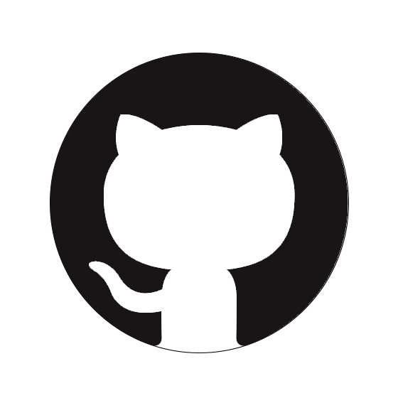

Youtube Music Downloader
Youtube Music Downloader est un logiciel spécialement conçu pour faciliter le téléchargement de musique depuis la plateforme Youtube Music. Ce logiciel vous permet de récupérer vos morceaux préférés au format .mp3, vous offrant ainsi la possibilité de les écouter hors ligne et de les transférer sur différents appareils.
Javascript
CSS
HTML
